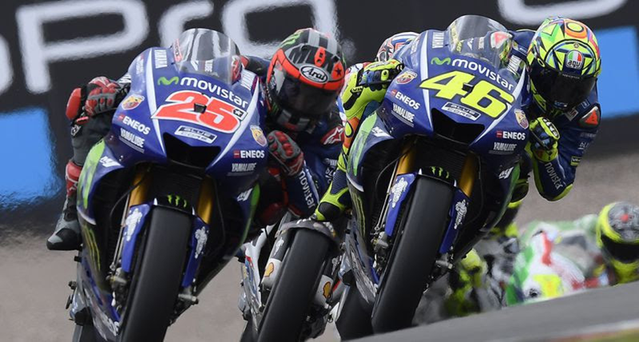
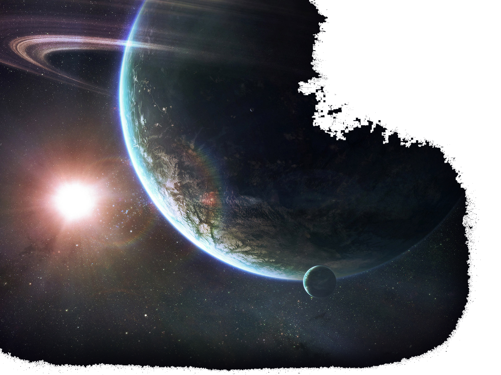

School
 TO TOP
TO TOP
About me.
I am 28 years old, i am married, no children yet. My hobbies are motorsports specifically MotoGp. Im a fan of motorcycles and contact sports as kickboxing or mma.
I like eating out, watching movies, or just watching tv home as discovery channels and national geographic.
I would like to work one day as a webdesigner because of my passion for computers and web overall.
Grand Prix motorcycle racing refers to the premier class of motorcycle racing events held on road circuits. Independent motorcycle racing events have been held since the start of the twentieth century[1] and large national events were often given the title Grand Prix,[2] The foundation of a recognised international governing body for motorcycle sport, the Fédération Internationale de Motocyclisme in 1949 provided the opportunity to coordinate rules and regulations in order that selected events could count towards official World Championship's as FIM Road Racing World Championship Grand Prix. It is the oldest established motorsport world championship.[3]
 Learn MoreKickboxing is a group of stand-up combat sports based on kicking and punching, historically developed from Karate and Muay Thai.[1][2] Kickboxing is practiced for self-defense, general fitness, or as a contact sport.[3][4][5]
Learn MoreAstronomy (from Greek: ἀστρονομία) is a natural science that studies celestial objects and phenomena. It applies mathematics, physics, and chemistry, in an effort to explain the origin of those objects and phenomena and their evolution. Objects of interest include planets, moons, stars, galaxies, and comets; while the phenomena include supernova explosions, gamma ray bursts, and cosmic microwave background radiation. More generally, all astronomical phenomena that originate outside Earth's atmosphere are within the purview of astronomy. A related but distinct subject, physical cosmology, is concerned with the study of the Universe as a whole.[1]
 Learn MoreInformation technology (IT) is the application of computers to store, study, retrieve, transmit, and manipulate data,[1] or information, often in the context of a business or other enterprise.[2] IT is considered a subset of information and communications technology (ICT). In 2012, Zuppo proposed an ICT hierarchy where each hierarchy level "contain[s] some degree of commonality in that they are related to technologies that facilitate the transfer of information and various types of electronically mediated communications."[3]
Learn More